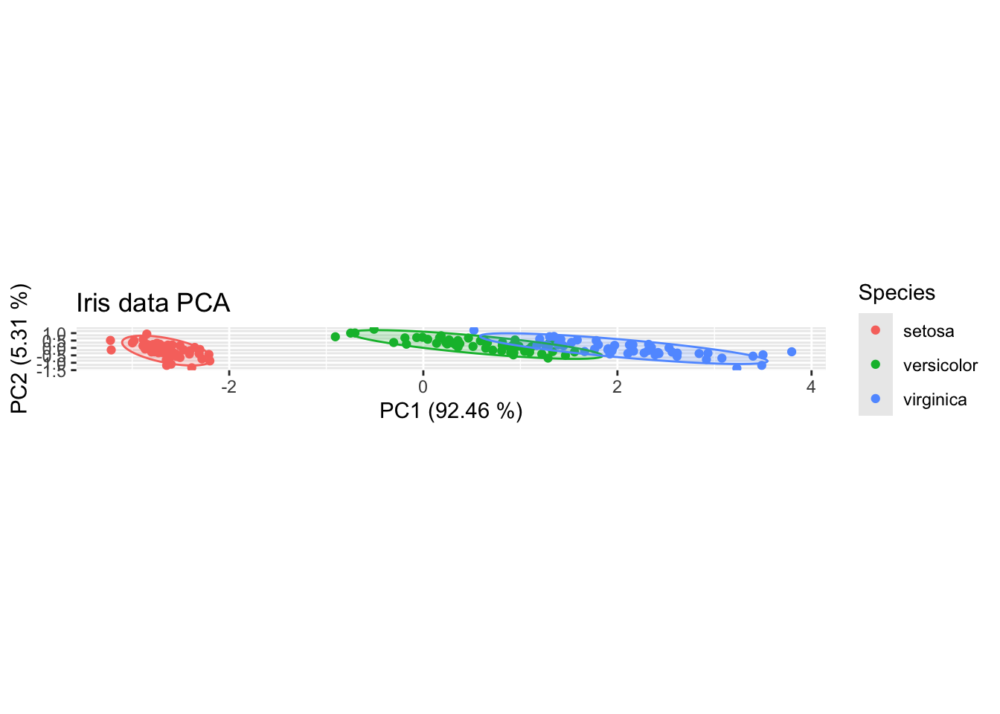

── Attaching packages ─────────────────────────────────────── tidyverse 1.3.2 ──
✔ ggplot2 3.4.1 ✔ purrr 1.0.1
✔ tibble 3.2.1 ✔ dplyr 1.1.0
✔ tidyr 1.3.0 ✔ stringr 1.5.0
✔ readr 2.1.4 ✔ forcats 1.0.0
── Conflicts ────────────────────────────────────────── tidyverse_conflicts() ──
✖ dplyr::filter() masks stats::filter()
✖ dplyr::lag() masks stats::lag()15 Principal Components Analysis
A generic pipeline for PCA.
Principal Components Analysis (PCA) is a relatively simple way to identify clusters and to visualise patterns in the profile-wide expression of cytokines. In order to perform PCA in R, we need the data in a wide format.
15.1 Libraries
15.2 Set a random seed
set.seed(8882321)15.3 Load iris data
Use the R Iris data
df<-as.tibble(iris)Warning: `as.tibble()` was deprecated in tibble 2.0.0.
ℹ Please use `as_tibble()` instead.
ℹ The signature and semantics have changed, see `?as_tibble`.kable(df)| Sepal.Length | Sepal.Width | Petal.Length | Petal.Width | Species |
|---|---|---|---|---|
| 5.1 | 3.5 | 1.4 | 0.2 | setosa |
| 4.9 | 3.0 | 1.4 | 0.2 | setosa |
| 4.7 | 3.2 | 1.3 | 0.2 | setosa |
| 4.6 | 3.1 | 1.5 | 0.2 | setosa |
| 5.0 | 3.6 | 1.4 | 0.2 | setosa |
| 5.4 | 3.9 | 1.7 | 0.4 | setosa |
| 4.6 | 3.4 | 1.4 | 0.3 | setosa |
| 5.0 | 3.4 | 1.5 | 0.2 | setosa |
| 4.4 | 2.9 | 1.4 | 0.2 | setosa |
| 4.9 | 3.1 | 1.5 | 0.1 | setosa |
| 5.4 | 3.7 | 1.5 | 0.2 | setosa |
| 4.8 | 3.4 | 1.6 | 0.2 | setosa |
| 4.8 | 3.0 | 1.4 | 0.1 | setosa |
| 4.3 | 3.0 | 1.1 | 0.1 | setosa |
| 5.8 | 4.0 | 1.2 | 0.2 | setosa |
| 5.7 | 4.4 | 1.5 | 0.4 | setosa |
| 5.4 | 3.9 | 1.3 | 0.4 | setosa |
| 5.1 | 3.5 | 1.4 | 0.3 | setosa |
| 5.7 | 3.8 | 1.7 | 0.3 | setosa |
| 5.1 | 3.8 | 1.5 | 0.3 | setosa |
| 5.4 | 3.4 | 1.7 | 0.2 | setosa |
| 5.1 | 3.7 | 1.5 | 0.4 | setosa |
| 4.6 | 3.6 | 1.0 | 0.2 | setosa |
| 5.1 | 3.3 | 1.7 | 0.5 | setosa |
| 4.8 | 3.4 | 1.9 | 0.2 | setosa |
| 5.0 | 3.0 | 1.6 | 0.2 | setosa |
| 5.0 | 3.4 | 1.6 | 0.4 | setosa |
| 5.2 | 3.5 | 1.5 | 0.2 | setosa |
| 5.2 | 3.4 | 1.4 | 0.2 | setosa |
| 4.7 | 3.2 | 1.6 | 0.2 | setosa |
| 4.8 | 3.1 | 1.6 | 0.2 | setosa |
| 5.4 | 3.4 | 1.5 | 0.4 | setosa |
| 5.2 | 4.1 | 1.5 | 0.1 | setosa |
| 5.5 | 4.2 | 1.4 | 0.2 | setosa |
| 4.9 | 3.1 | 1.5 | 0.2 | setosa |
| 5.0 | 3.2 | 1.2 | 0.2 | setosa |
| 5.5 | 3.5 | 1.3 | 0.2 | setosa |
| 4.9 | 3.6 | 1.4 | 0.1 | setosa |
| 4.4 | 3.0 | 1.3 | 0.2 | setosa |
| 5.1 | 3.4 | 1.5 | 0.2 | setosa |
| 5.0 | 3.5 | 1.3 | 0.3 | setosa |
| 4.5 | 2.3 | 1.3 | 0.3 | setosa |
| 4.4 | 3.2 | 1.3 | 0.2 | setosa |
| 5.0 | 3.5 | 1.6 | 0.6 | setosa |
| 5.1 | 3.8 | 1.9 | 0.4 | setosa |
| 4.8 | 3.0 | 1.4 | 0.3 | setosa |
| 5.1 | 3.8 | 1.6 | 0.2 | setosa |
| 4.6 | 3.2 | 1.4 | 0.2 | setosa |
| 5.3 | 3.7 | 1.5 | 0.2 | setosa |
| 5.0 | 3.3 | 1.4 | 0.2 | setosa |
| 7.0 | 3.2 | 4.7 | 1.4 | versicolor |
| 6.4 | 3.2 | 4.5 | 1.5 | versicolor |
| 6.9 | 3.1 | 4.9 | 1.5 | versicolor |
| 5.5 | 2.3 | 4.0 | 1.3 | versicolor |
| 6.5 | 2.8 | 4.6 | 1.5 | versicolor |
| 5.7 | 2.8 | 4.5 | 1.3 | versicolor |
| 6.3 | 3.3 | 4.7 | 1.6 | versicolor |
| 4.9 | 2.4 | 3.3 | 1.0 | versicolor |
| 6.6 | 2.9 | 4.6 | 1.3 | versicolor |
| 5.2 | 2.7 | 3.9 | 1.4 | versicolor |
| 5.0 | 2.0 | 3.5 | 1.0 | versicolor |
| 5.9 | 3.0 | 4.2 | 1.5 | versicolor |
| 6.0 | 2.2 | 4.0 | 1.0 | versicolor |
| 6.1 | 2.9 | 4.7 | 1.4 | versicolor |
| 5.6 | 2.9 | 3.6 | 1.3 | versicolor |
| 6.7 | 3.1 | 4.4 | 1.4 | versicolor |
| 5.6 | 3.0 | 4.5 | 1.5 | versicolor |
| 5.8 | 2.7 | 4.1 | 1.0 | versicolor |
| 6.2 | 2.2 | 4.5 | 1.5 | versicolor |
| 5.6 | 2.5 | 3.9 | 1.1 | versicolor |
| 5.9 | 3.2 | 4.8 | 1.8 | versicolor |
| 6.1 | 2.8 | 4.0 | 1.3 | versicolor |
| 6.3 | 2.5 | 4.9 | 1.5 | versicolor |
| 6.1 | 2.8 | 4.7 | 1.2 | versicolor |
| 6.4 | 2.9 | 4.3 | 1.3 | versicolor |
| 6.6 | 3.0 | 4.4 | 1.4 | versicolor |
| 6.8 | 2.8 | 4.8 | 1.4 | versicolor |
| 6.7 | 3.0 | 5.0 | 1.7 | versicolor |
| 6.0 | 2.9 | 4.5 | 1.5 | versicolor |
| 5.7 | 2.6 | 3.5 | 1.0 | versicolor |
| 5.5 | 2.4 | 3.8 | 1.1 | versicolor |
| 5.5 | 2.4 | 3.7 | 1.0 | versicolor |
| 5.8 | 2.7 | 3.9 | 1.2 | versicolor |
| 6.0 | 2.7 | 5.1 | 1.6 | versicolor |
| 5.4 | 3.0 | 4.5 | 1.5 | versicolor |
| 6.0 | 3.4 | 4.5 | 1.6 | versicolor |
| 6.7 | 3.1 | 4.7 | 1.5 | versicolor |
| 6.3 | 2.3 | 4.4 | 1.3 | versicolor |
| 5.6 | 3.0 | 4.1 | 1.3 | versicolor |
| 5.5 | 2.5 | 4.0 | 1.3 | versicolor |
| 5.5 | 2.6 | 4.4 | 1.2 | versicolor |
| 6.1 | 3.0 | 4.6 | 1.4 | versicolor |
| 5.8 | 2.6 | 4.0 | 1.2 | versicolor |
| 5.0 | 2.3 | 3.3 | 1.0 | versicolor |
| 5.6 | 2.7 | 4.2 | 1.3 | versicolor |
| 5.7 | 3.0 | 4.2 | 1.2 | versicolor |
| 5.7 | 2.9 | 4.2 | 1.3 | versicolor |
| 6.2 | 2.9 | 4.3 | 1.3 | versicolor |
| 5.1 | 2.5 | 3.0 | 1.1 | versicolor |
| 5.7 | 2.8 | 4.1 | 1.3 | versicolor |
| 6.3 | 3.3 | 6.0 | 2.5 | virginica |
| 5.8 | 2.7 | 5.1 | 1.9 | virginica |
| 7.1 | 3.0 | 5.9 | 2.1 | virginica |
| 6.3 | 2.9 | 5.6 | 1.8 | virginica |
| 6.5 | 3.0 | 5.8 | 2.2 | virginica |
| 7.6 | 3.0 | 6.6 | 2.1 | virginica |
| 4.9 | 2.5 | 4.5 | 1.7 | virginica |
| 7.3 | 2.9 | 6.3 | 1.8 | virginica |
| 6.7 | 2.5 | 5.8 | 1.8 | virginica |
| 7.2 | 3.6 | 6.1 | 2.5 | virginica |
| 6.5 | 3.2 | 5.1 | 2.0 | virginica |
| 6.4 | 2.7 | 5.3 | 1.9 | virginica |
| 6.8 | 3.0 | 5.5 | 2.1 | virginica |
| 5.7 | 2.5 | 5.0 | 2.0 | virginica |
| 5.8 | 2.8 | 5.1 | 2.4 | virginica |
| 6.4 | 3.2 | 5.3 | 2.3 | virginica |
| 6.5 | 3.0 | 5.5 | 1.8 | virginica |
| 7.7 | 3.8 | 6.7 | 2.2 | virginica |
| 7.7 | 2.6 | 6.9 | 2.3 | virginica |
| 6.0 | 2.2 | 5.0 | 1.5 | virginica |
| 6.9 | 3.2 | 5.7 | 2.3 | virginica |
| 5.6 | 2.8 | 4.9 | 2.0 | virginica |
| 7.7 | 2.8 | 6.7 | 2.0 | virginica |
| 6.3 | 2.7 | 4.9 | 1.8 | virginica |
| 6.7 | 3.3 | 5.7 | 2.1 | virginica |
| 7.2 | 3.2 | 6.0 | 1.8 | virginica |
| 6.2 | 2.8 | 4.8 | 1.8 | virginica |
| 6.1 | 3.0 | 4.9 | 1.8 | virginica |
| 6.4 | 2.8 | 5.6 | 2.1 | virginica |
| 7.2 | 3.0 | 5.8 | 1.6 | virginica |
| 7.4 | 2.8 | 6.1 | 1.9 | virginica |
| 7.9 | 3.8 | 6.4 | 2.0 | virginica |
| 6.4 | 2.8 | 5.6 | 2.2 | virginica |
| 6.3 | 2.8 | 5.1 | 1.5 | virginica |
| 6.1 | 2.6 | 5.6 | 1.4 | virginica |
| 7.7 | 3.0 | 6.1 | 2.3 | virginica |
| 6.3 | 3.4 | 5.6 | 2.4 | virginica |
| 6.4 | 3.1 | 5.5 | 1.8 | virginica |
| 6.0 | 3.0 | 4.8 | 1.8 | virginica |
| 6.9 | 3.1 | 5.4 | 2.1 | virginica |
| 6.7 | 3.1 | 5.6 | 2.4 | virginica |
| 6.9 | 3.1 | 5.1 | 2.3 | virginica |
| 5.8 | 2.7 | 5.1 | 1.9 | virginica |
| 6.8 | 3.2 | 5.9 | 2.3 | virginica |
| 6.7 | 3.3 | 5.7 | 2.5 | virginica |
| 6.7 | 3.0 | 5.2 | 2.3 | virginica |
| 6.3 | 2.5 | 5.0 | 1.9 | virginica |
| 6.5 | 3.0 | 5.2 | 2.0 | virginica |
| 6.2 | 3.4 | 5.4 | 2.3 | virginica |
| 5.9 | 3.0 | 5.1 | 1.8 | virginica |
The first step in PCA is to run the prcomp command on the columns of interest. This is necessarily a complete case table with numeric values, so missing values should be imputed. The mice package is good for imputation in R, but isn’t used here as the data are mostly complete. There’s just one missing value which we’ll drop to keep this tutorial focussed.
15.4 Prcomp
df.pca <- prcomp(select(iris,Sepal.Length:Petal.Width))
(df.pca.summary<-summary(df.pca))Importance of components:
PC1 PC2 PC3 PC4
Standard deviation 2.0563 0.49262 0.2797 0.15439
Proportion of Variance 0.9246 0.05307 0.0171 0.00521
Cumulative Proportion 0.9246 0.97769 0.9948 1.0000015.5 Extract importance data used for scree plots
(
df.importance<-tibble(pc = 1:length(df.pca.summary$importance[1,]),
standard.deviation = df.pca.summary$importance[1,],
prop.of.variance = df.pca.summary$importance[2,],
cumulative.variance = df.pca.summary$importance[3,]
)
)# A tibble: 4 × 4
pc standard.deviation prop.of.variance cumulative.variance
<int> <dbl> <dbl> <dbl>
1 1 2.06 0.925 0.925
2 2 0.493 0.0531 0.978
3 3 0.280 0.0171 0.995
4 4 0.154 0.00521 1 Whenever you work with PCA, it is useful to start by looking at the scree plots, which show (a) the proportion of all variance in the data that are explained by each principal component and (b) the cumulative proportion of variance explained by PCs 1-n.
15.6 Scree plot
ggplot(df.importance,aes(pc,prop.of.variance))+ geom_bar(stat="identity") +
ggplot(df.importance,aes(pc,cumulative.variance))+geom_bar(stat="identity")It looks like most of the variance is explained by the first principal component.
The prcomp data outputs are not compatible with ggplot, so we’ll grab the PC values and add them to our data frame. This is possible because the prcomp data is embedded in an object x which maps to the original df on a row-by-row basis. This allows merging via the bind_cols function.
15.7 Add PC variables to data frame
df<- bind_cols(df,as.data.frame(df.pca$x))15.8 Biplot PC1/PC2
Biplots are used to explore PCA data visually. We’ll start by looking at PC1 and PC2. Our chart will be scaled on the x and y axes [using the aspect ratio controls within theme()]so that the dimensions of the chart don’t misrepresent the proportion of variance explained by each PC. The ellipses show the 95% confidence interval for the various groups.
ggplot(df,aes(PC1,PC2,col=Species))+
geom_point() +
stat_ellipse(geom="polygon", aes(fill = Species), alpha = 0.2, show.legend = FALSE, level = 0.95)+
xlab(label = str_c("PC1 (",round(100*df.importance$prop.of.variance[1],2)," %)",sep = ""))+
ylab(label = str_c("PC2 (",round(100*df.importance$prop.of.variance[2],2)," %)",sep = ""))+
theme(aspect.ratio=df.importance$prop.of.variance[2]/df.importance$prop.of.variance[1])+
ggtitle("Iris data PCA")
15.8.1 Loadings plot PC1/PC2
It is hard to interpret this in the context of various features without understanding which variables contributed to the observed variance in the PCA. A loadings plot is really useful for this. We can get the Loadings from the prcomp object.
df.pca %>%
tidy(matrix = "rotation") %>%
filter(PC=="1" | PC=="2") %>%
ggplot(aes(column,value)) +
geom_bar(stat="identity")+
facet_grid(PC~.)+
coord_flip()